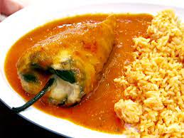

Description
An authentic chile relleno recipe made from roasted poblano peppers stuffed with cheese, dipped in a fluffy egg batter and fried until golden brown! This traditional Mexican dish is fun to make and better than any restaurant version you’ll ever try!
Ingredients
- 6 large poblano peppers
- 8 ounces of Monterey Jack cheese, cut into long strips/sticks
- 4 cups of oil, for frying
- 3 large eggs
- 1/2 cup of all-purpose flour
- 1/2 teaspoon of fine salt
Steps
- Roast the peppers
- Broil poblanos for 5 minutes or until skin is blackened
- Remove from oven and place poblanos in a Ziploc bag so that they can steam
- Peel the peppers
- Cut a small slit down the middle of each pepper. If you would like it less spicy you can take out the seeds.
- Stuff the peppers
- Make the batter
- Coat the peppers with batter
- Fry the chile rellenos
- Transfer the peppers to a lined baking sheet to drain excess oil
- Serve!